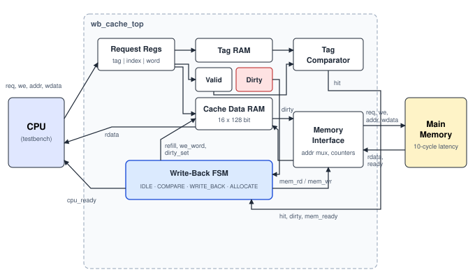
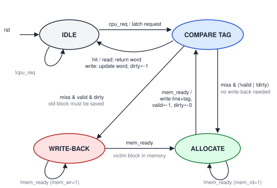
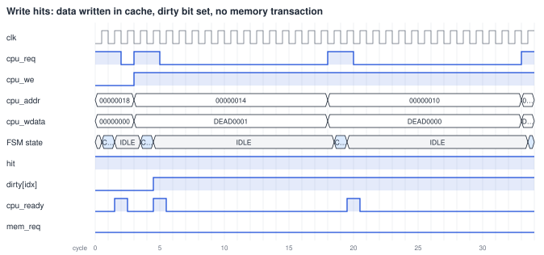
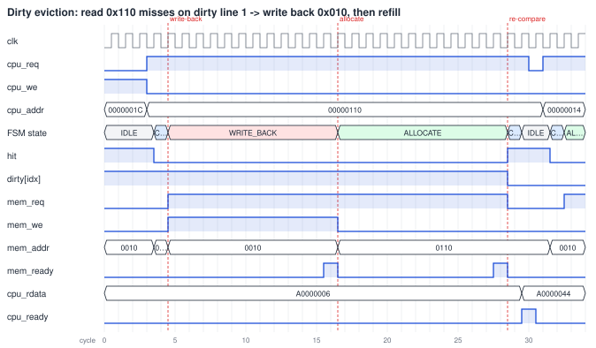
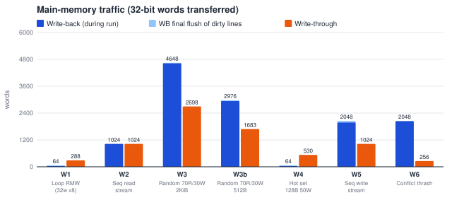

Abstract—Main-memory bandwidth is a scarce resource, and every store that a cache forwards to memory consumes it. This project designs, implements and verifies a direct-mapped write-back, write-allocate cache controller in synthesizable Verilog HDL. The design is partitioned into a Cache Data RAM, Tag RAM, Valid RAM, Dirty-Bit RAM, Tag Comparator, a four-state controller FSM (Idle, Compare, Write-Back, Allocate) and a block-transfer Memory Interface. A dirty bit per line records whether the cached block differs from memory, so write hits are absorbed by the cache and a block is written to memory only when a dirty line is evicted—strictly before the new block is refilled. A write-through, no-write-allocate cache with identical geometry is built as a reference. A self-checking directed testbench with a golden memory model executes 6,494 checks with zero failures and covers all four controller states and all six legal transitions. On workloads with temporal write locality the write-back cache moves 78–88% fewer words to and from memory and finishes 3.7–3.8× faster than the write-through cache, while streaming and conflict-heavy store patterns expose the cost of write-allocation, which motivates the Phase II improvements.
Index Terms—cache memory, write-back, write-through, dirty bit, cache controller, finite state machine, Verilog HDL, memory traffic
The gap between processor and DRAM speed makes the cache hierarchy the main lever for performance and for memory-bandwidth consumption [2], [10]. Besides deciding what to keep, a cache must decide when a store reaches main memory. A write-through cache forwards every store, which keeps memory always up to date but generates one bus transaction per store. A write-back cache updates only its own copy and marks the line dirty; memory is updated once, when the dirty line is replaced. Repeated stores to the same block therefore cost a single block write [3], [4].
The price of write-back is controller complexity: a miss that selects a dirty victim must first transfer the old block to memory and only then refill the line, and the dirty bit must be set, cleared and tested at exactly the right moments. This project implements that controller in RTL and checks it against a write-through baseline.
Objectives. (i) Implement read hits and misses; (ii) implement write hits using dirty bits; (iii) handle dirty-block eviction, writing the old block to memory before refill; (iv) verify every controller state and transition; and (v) compare memory traffic against write-through behaviour.
Cache fundamentals and write policies. Smith’s survey [3] established the vocabulary used today: placement, replacement, line size, and the write-through versus copy-back (write-back) choice. It observed that write-back reduces memory traffic but complicates consistency, because memory may hold stale data. Goodman [4] studied caches specifically as a means of reducing processor–memory traffic in shared-bus systems and showed that copy-back caches cut bus traffic far more than write-through ones, the starting point of later snooping-coherence protocols.
Write-miss policies. Jouppi [5] separated the write-hit policy (write-through or write-back) from the write-miss policy (fetch-on-write, write-allocate, write-validate, write-around, write-invalidate). He showed that write-back with fetch-on-write reads blocks that are about to be overwritten entirely, and that no-fetch-on-write variants with per-word valid bits remove much of that traffic. This is exactly the effect our streaming-store experiment reproduces (Section III-F).
Direct-mapped organisation. Hill [6] argued that direct-mapped caches, despite higher miss ratios, can win on access time and simplicity because the tag check and data read happen in parallel with no way-selection multiplexer. Jouppi [7] showed that their main weakness, conflict misses, can be reduced with small victim caches. We use direct mapping for the Phase I prototype and use a conflict-thrash workload to measure that weakness.
Controller design. Patterson and Hennessy [1] give the classic four-state FSM for a simple write-back cache (Idle, Compare Tag, Write-Back, Allocate) with a blocking CPU interface and a multi-cycle memory. Our controller follows that structure. Hennessy and Patterson [2] and Jacob et al. [10] quantify the benefits of write buffers, dirty bits and write-back in modern memory hierarchies.
Write-back scheduling in modern systems. In current last-level caches the question is when dirty data is written back. Eager write-back [8] writes dirty lines that are likely to be evicted early, while the bus is idle, to smooth bursts. The virtual write queue [9] coordinates last-level-cache write-backs with DRAM scheduling to reduce read–write turnaround penalties. These techniques still rely on the basic dirty-bit mechanism implemented here.
Gap addressed. Textbooks describe the write-back FSM at the behavioural level. This project provides a complete, modular, synthesizable RTL implementation with a self-checking verification environment and a cycle-accurate, word-level traffic comparison against write-through using the same datapath blocks.
The cache is direct-mapped with 16 lines of 16 bytes (four 32-bit words), giving 256 bytes of data. A 32-bit byte address is split as
tag = A[31:8] (24 b) | index = A[7:4] (4 b) | word = A[3:2] | byte = A[1:0](1)
The policy is write-back on write hits and write-allocate (fetch-on-write) on write misses. Main memory is a block-transfer model with a fixed latency of 10 cycles per transaction. All sizes are `define parameters in cache_params.vh.

Fig. 1 shows the datapath. Each suggested module is a separate Verilog file:
Request registers capture address, data and R/W when a request is accepted, so the CPU-side signals may change while the miss is serviced.

Fig. 2 gives the state diagram:
A first_cmp flag ensures that each request is counted as exactly one hit or one miss, even though a miss passes through Compare twice.
For the comparison, wt_cache_top reuses the same Data, Tag and Valid RAMs and the Tag Comparator, without dirty bits. It is write-through, no-write-allocate: every store sends one word to memory (word-masked write) and also updates the cache on a hit, while a store miss does not allocate. It has no write buffer, so the CPU stalls on every store, the textbook baseline [1].
The testbench (tb_cache.v) drives the same request stream into both caches, each attached to its own memory model:
The complete RTL, reference cache, testbench and scripts are implemented and simulate under Icarus Verilog 13 [12] (IEEE 1364-2005 semantics [11]) with zero compile warnings.
| ID | Scenario and checked behaviour |
|---|---|
| T0 | Reset: all lines invalid and clean, FSM in Idle |
| T1 | Read miss, invalid line → Allocate only, no write-back |
| T2 | Read hit: no memory traffic |
| T3 | Write hit: dirty set; WB memory unchanged, WT memory updated |
| T4 | 3 more writes to dirty line: 0 WB transactions vs. 4 WT writes |
| T5 | Read miss on dirty line: Write-Back then Allocate; old data found in memory |
| T6 | Clean victim: no write-back |
| T7 | Write miss, invalid line: allocate, write, line dirty (WT: no allocate) |
| T8 | Write miss on dirty line: write-back, allocate, write |
| T9 | Read-back of written and evicted data |
| T10 | Dirty all 16 lines, sweep: exactly 16 write-backs, all clean |
| T11 | Synchronous reset clears valid, dirty and counters |
Table I lists the directed tests. The full run (directed tests plus seven workloads) executes 6,494 checks with 0 errors. The FSM visits all four states and all six legal transitions with no illegal ones.


Fig. 3 shows waveforms extracted from the VCD. A hit takes 2 cycles, a clean miss 15 cycles, and a dirty miss 27 cycles (two 10-cycle memory transactions plus handshakes).
| Workload | Accesses | WB hit % | WB write-backs | WB words | WT words | WB cycles | WT cycles |
|---|---|---|---|---|---|---|---|
| W1 Loop read-modify-write, 32 words ×8 | 512 | 98.4 | 0 | 64 | 288 | 1,128 | 4,200 |
| W2 Sequential read stream, 4 KiB | 1,024 | 75.0 | 0 | 1,024 | 1,024 | 5,376 | 5,376 |
| W3 Random 70%R/30%W, 2 KiB | 1,000 | 12.7 | 285 | 4,648 | 2,698 | 16,769 | 13,411 |
| W3b Random 70%R/30%W, 512 B | 1,000 | 48.6 | 221 | 2,976 | 1,683 | 11,334 | 10,051 |
| W4 Hot set 128 B, 50% writes | 1,000 | 99.2 | 0 | 64 | 530 | 2,104 | 8,080 |
| W5 Sequential write stream, 4 KiB | 1,024 | 75.0 | 240 | 2,048 | 1,024 | 8,256 | 14,336 |
| W6 Conflict thrash (2 blocks, same index) | 256 | 0.0 | 255 | 2,048 | 256 | 6,900 | 3,584 |

Table II and Fig. 4 give a first traffic comparison. With temporal write locality (W1, W4) the write-back cache cuts traffic by 77.8% and 87.9% and runs 3.7–3.8× faster, because repeated stores to a resident block cost nothing. Read-only streaming (W2) is identical for both caches. Three cases favour write-through. In low-locality random traffic (W3, W3b) most dirty blocks are evicted after few writes. In streaming stores (W5) fetch-on-write reads every block before it is fully overwritten, which Jouppi described [5]; WB still finishes 1.7× faster because it stalls on block misses rather than on every store. In conflict thrash (W6) every store evicts a dirty block (8 words vs. 1). These results show that the controller behaves correctly and that write-back pays off only when there is write locality.
Phase II will (i) add a no-fetch-on-write / write-validate option with per-word dirty bits to remove the W5 penalty; (ii) add a small write-back buffer so that refill can start before the victim reaches memory; (iii) evaluate 2-way set associativity with LRU against the W6 conflict case; and (iv) report synthesis area and timing.
(Each member’s work is visible in the GitHub commit history.)